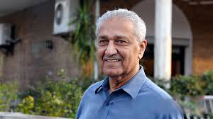

Abdul Qadeer Khan (A.Q Khan)
1936-2021
Father of Pakistan Nuclear program
Dr. Abdul Qadeer Khan is widely regarded as the father of Pakistan's nuclear program. A brilliant metallurgist and scientist, he played a pivotal role in transforming Pakistan into a nuclear power by leading the development of the country's uranium enrichment program. His efforts culminated in Pakistan successfully conducting its first nuclear tests in 1998, making it the first Muslim-majority country to possess nuclear weapons. Dr. Khan's work not only strengthened Pakistan's defense capabilities but also earned him national hero status. Despite controversy in later years, his contributions to Pakistan's security and scientific progress remain monumental and widely respected.
Biographies
- "Dr. A.Q. Khan: Architect of Pakistan's Nuclear Programme" by Prof. Dr. M.A. Chaudhry
- "Main ne Pakistan ko Atom Bomb Diya" by Dr. Abdul Qadeer Khan
- "Dr. Abdul Qadeer Khan: A National Hero" by Various Pakistani Authors
- "Subah Hoti Hai" by Dr. Abdul Qadeer Khan
- "Dastaan-e-Shujaat: Dr Abdul Qadeer Khan Ki Kahani" by Rasheed Amjad